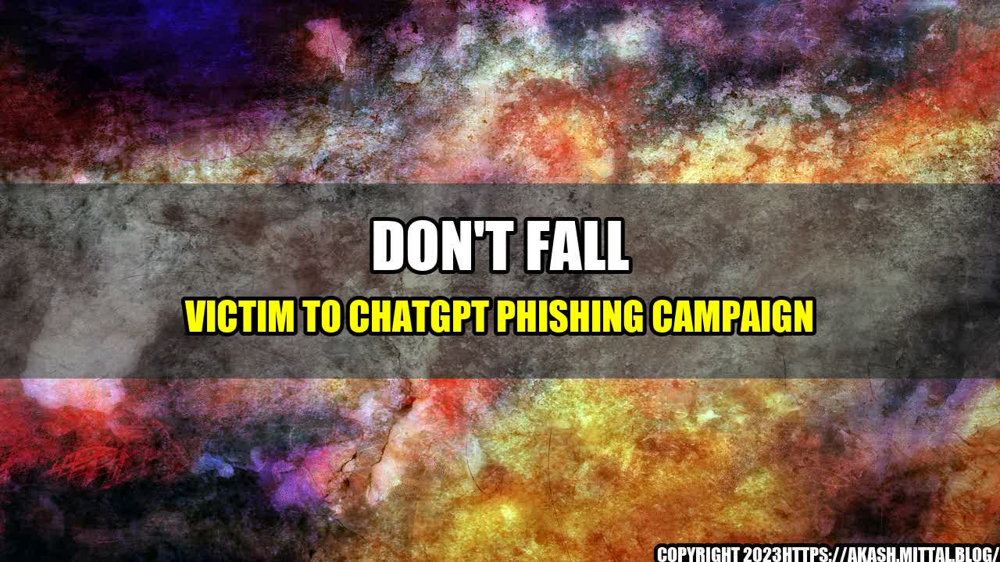

Don't Fall Victim to ChatGPT Phishing Campaign

Online communication platforms have become an integral part of our lives. We use them for work, socializing, and even maintaining long-distance relationships. One of the popular platforms in recent years has been ChatGPT, which caters to individuals and businesses alike. However, as with any online service, there is always the risk of cyber attacks, including phishing campaigns.
A phishing campaign is an attempt by cybercriminals to gain access to sensitive information such as banking and login credentials, personal information, or even money. The attackers use various methods to trick individuals into clicking on a malicious link or providing their information to the hackers. These methods include sending emails that appear to be from legitimate sources, creating fake websites that mimic legitimate ones, and even using social engineering tactics to gain trust.
Phishing campaigns can be very effective, and their success rate continues to grow because of the use of increasingly sophisticated techniques. The attackers prey on human psychology by creating a sense of urgency or using a believable pretext to make the victim feel comfortable enough to provide their information. For instance, the ChatGPT phishing campaign targets ChatGPT users where the scammer poses as a ChatGPT representative and asks the user to verify their account details to avoid being locked out of their account. The attackers use this technique to trick users into sharing their login credentials, which the hackers can use to gain access to their account.
Detecting a phishing campaign can be challenging, but there are some signs to look for:
- The sender's email address does not match the company's domain name
- The email content is poorly written, containing spelling and grammar errors
- The message creates a sense of urgency or uses fear tactics to prompt immediate action
- The message contains a suspicious link, which the user is asked to click on
- The email asks for sensitive information such as login or financial credentials
If you suspect you have fallen victim to a phishing campaign, there are a few steps you can take:
- Change the passwords of all accounts that may have been breached
- Contact your bank or credit card company to report any fraudulent charges
- Report the phishing attempt to the company or organization being impersonated and to relevant authorities such as the police or cybercrime unit
Prevention is the best defense against phishing campaigns. Here are some tips to help protect yourself from falling victim to these attacks:
- Always be suspicious of unsolicited emails or messages asking for any sensitive information
- Double-check the sender's email address and the links in the message before clicking on them
- Do not share sensitive information unless you are absolutely sure of the legitimacy of the message or the sender
- Keep your operating system and software updated to prevent vulnerabilities from being exploited
- Use anti-virus software or other security tools to protect your device from malware
- Enable two-factor authentication where possible to provide an extra layer of security to your accounts
Conclusion
Phishing campaigns are a real and growing threat, and everyone should take steps to protect themselves. By staying vigilant, double-checking links and email addresses, and being skeptical of unsolicited messages or requests for sensitive information, you can reduce your risk of falling victim to a phishing attack.
In conclusion, ChatGPT users and all other users of online platforms should be cautious and follow security guidelines to avoid becoming prey to phishing campaigns.
References:
Hashtags: #phishing #cybersecurity #onlinesafety #chatgptscam
Category: Cybersecurity
 Security
Security Detective
Detective Shield
Shield
Curated by Team Akash.Mittal.Blog
Share on Twitter Share on LinkedIn